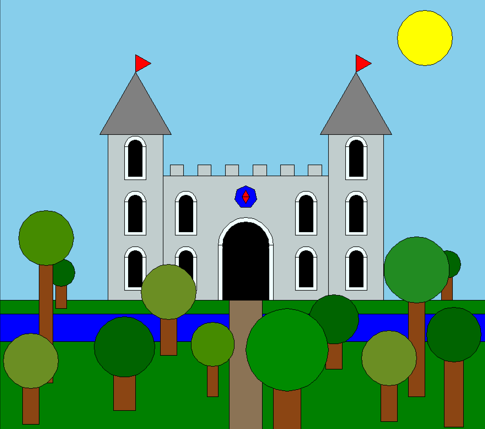

This project is built off of the turtle scene we drew in project 2, an assignment that did not allow for
the use of new functions. In this project, I used the provided functions (draw_rectangle, draw_square,
draw_triangle, draw_circle, draw_polygon, draw_curve, etc.) to create new, generalized functions that could
be reused to create a more complex scene.
For my castle scene, I tried to build in functionality that would
allow for building geometry of any size to be drawn, or windows to be algorithmically placed on walls rather
than individually. The main area where improvement can be seen is with the trees in the forest outside, where
they can now be any size or color that you wish.
The function I made here generates an individual tree, allowing any size or color to create a vast and unique
forest quickly. For example, a loop with a random number generator could be used to automatically generate a new
scene each time the program runs.
• t: The turtle graphics object for drawing
• x, y: Starting position coordinates for the tree
• width, height, radius: Control the size of the trunk and leaves
• color: The color of the leaves, allowing for a variety of tree types to be drawn
def draw_tree(t, x, y, width=20, height=80, radius=25, color="darkgreen"):
"""Draw a tree"""
leaf_start = width / 2 # Make sure the leaves are centered on the tree trunk
jump_to(t, x, y)
t.setheading(180) # Make sure the tree is pointing up
draw_rectangle(t, width, height, "chocolate4") # Draw Trunk
jump_to(t, x-leaf_start, y+height+leaf_start)
draw_circle(t, radius, color) # Draw Leaves

My scene uses a variety of simple shapes to craft a more complex and engaging image. The castle is based on three rectangles, with two cones topping off the towers on either end. Triangular flags are on top of each tower, and a geometric shape serves as an emblem for whomever the castle belongs to. The sun uses a yellow circle. The terrain features such as grass, a moat, and the road use rectangles, and the trees are comprised of a rectangular trunk and circular leaves. The scene represents a time of peace and, as such, no weapons or soldiers are present.